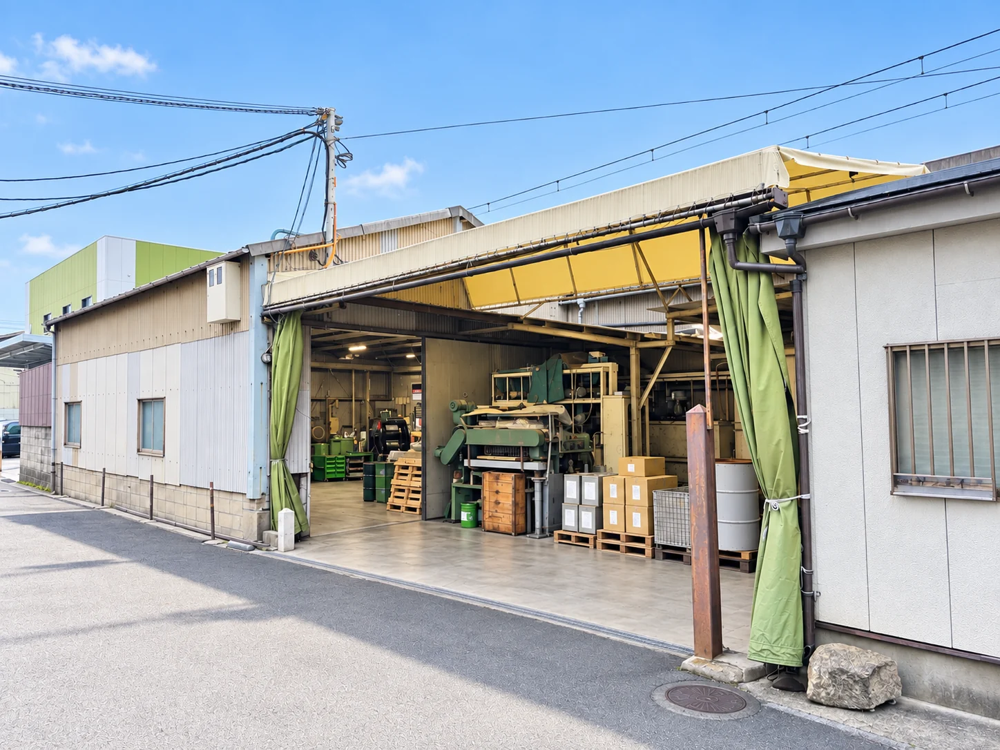

昭和47年（1972年）の創業以来、東大阪で金属バレル加工を専門に歩んできた株式会社サンエイ。創業から受け継いできた技術と経験を基に、金属部品の表面を次の工程につなぐ仕事を続けています。
株式会社サンエイは、金属部品のバレル加工・表面処理を専門とする会社です。メーカーなどで成形・熱処理された部品に対し、バリ取り、スケール除去、脱脂、光沢仕上げ、メッキ前の下地処理、防錆などを行い、組み立てやメッキといった後工程へつなぐ役割を担っています。
扱う部品は、機械チェーン、マテハン設備、立体駐車場、エレベーター関連などに使用される金属パーツが中心です。形状や大きさ、求める仕上がりは案件ごとに異なるため、長年培ってきた経験をもとに、研磨メディアやコンパウンド、加工条件を調整しながら対応しています。小ロットの加工にも対応します。
現在は4代目への事業承継を進めています。受け継がれてきた加工ノウハウや仕事への姿勢を守りながら、設備や生産体制には必要な変化を取り入れていく方針です。

| 社名 | 株式会社サンエイ |
|---|---|
| 所在地 | 〒577-0835 大阪府東大阪市柏田西3-4-38 |
| 創業 | 昭和47年（1972年） |
| 代表者 | 確認中 |
| 資本金 | 確認中 |
| 従業員数 | 確認中 |
| 事業承継 | 4代目への事業承継手続き中 |
| 事業内容 | 金属バレル加工・表面処理加工 |
| 主な加工 | バリ取り、スケール除去、脱脂、光沢仕上げ、メッキ下地処理、防錆処理、洗浄、脱水 |
| 対応ロット | 小ロットの加工にも対応 |
| 主な設備 | 回転式バレル機、振動式バレル機 |
| 電話番号 | 06-6722-5849 |
| メールアドレス | san-ei@alpha.ocn.ne.jp |
東大阪で金属バレル加工の事業を開始。創業以来、表面処理加工を専門として事業を継続してきました。
創業者から世代を重ねて事業を承継しながら、取引先の要望や加工品の変化に合わせて技術を蓄積してきました。
現在は4代目への事業承継手続きを進めています。長年の取引と加工ノウハウを受け継ぎながら、設備投資や生産体制の見直しも含め、今後の成長に向けた準備を進めています。
バレル加工では、同じ機械を使用していても、品物に合わせた研磨メディアやコンパウンドの選定、加工条件の調整によって仕上がりが変わります。サンエイが創業以来積み重ねてきたのは、こうした条件を見極める経験とノウハウです。
特に、脱脂と光沢仕上げはサンエイが強みとしている領域です。チェーン・搬送機器分野をはじめとする金属部品の加工に長年携わってきた実績が、継続して仕事を任せていただくうえでの基盤となっています。
〒577-0835
大阪府東大阪市柏田西3-4-38
加工のご相談・お見積りは、お問い合わせページから受け付けます。